Lab 3 - File Structure and File Transfer
Challenge
The challenge of this lab was to create a local file structure and to add index.html files to both the art101 folder and the lab3 subfolder.
Problems
My partner and I did not run into any big problems for this lab. The most difficult aspect of this lab was just formatting the images for the website -- it was difficult to make sure that the images were still legible without making them too large. Our solution for this was to take multiple screenshots instead of trying to fit everything into one image and to limit the width of the images: I chose to limit mine to 650 pixels while Hilton chose to limit his images to 500 pixels.
Reflection
This assignment was rather straightforward since the art101 file structure and the index.html files were already provided to us by Professor Modes. Again, the biggest issue we had was with the images, but that was also solved rather quickly. Overall, this lab was fairly easy.
Results
Screenshots of My Work
Task 1: to create a local file structure:
Here's how my final art101 directory looks:
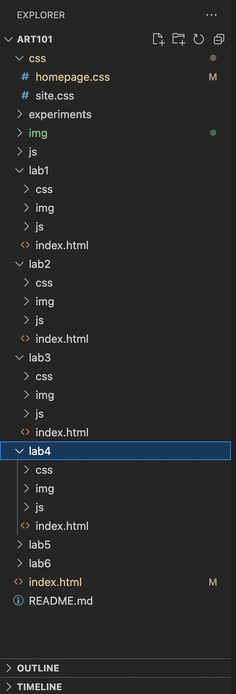Task 2: to create an index.html file in the art101 folder:
Here's the html source code:
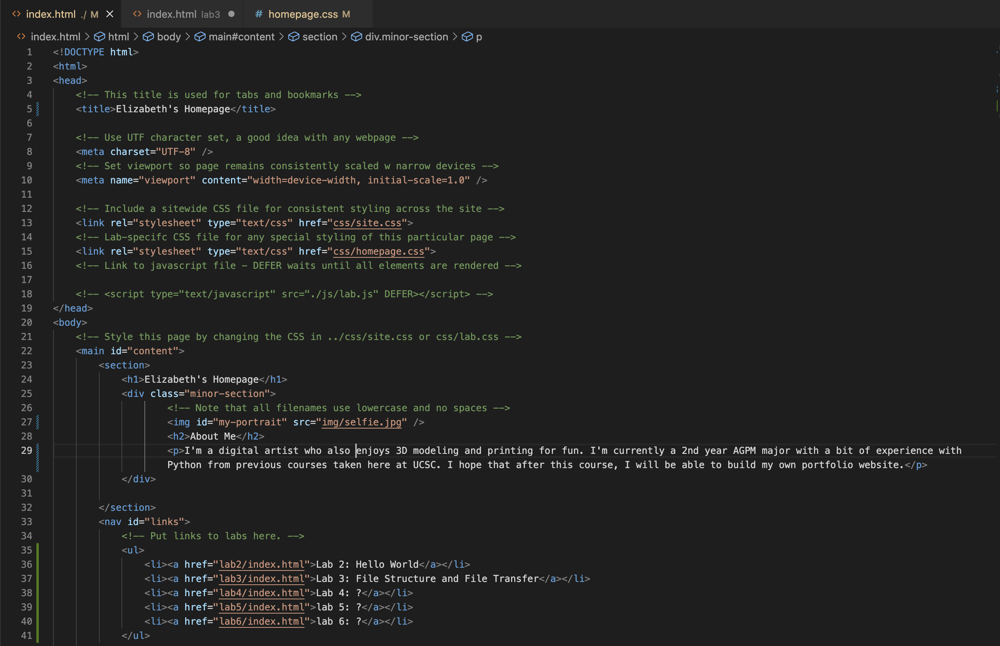 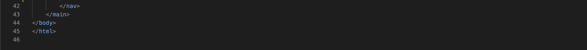Here's how the page appeared in the browser:
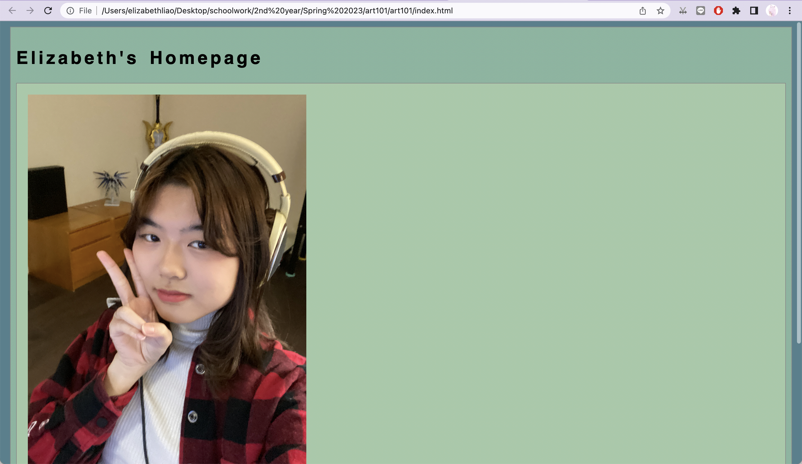 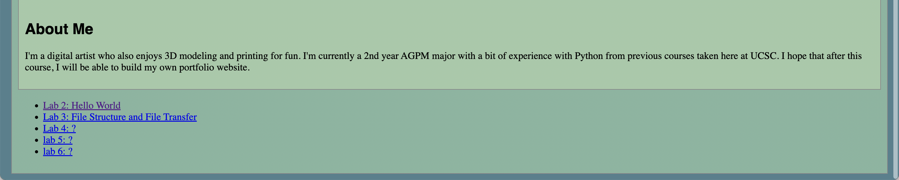Task 3: to create an index.html file in the lab3 folder:
Here's the html source code:
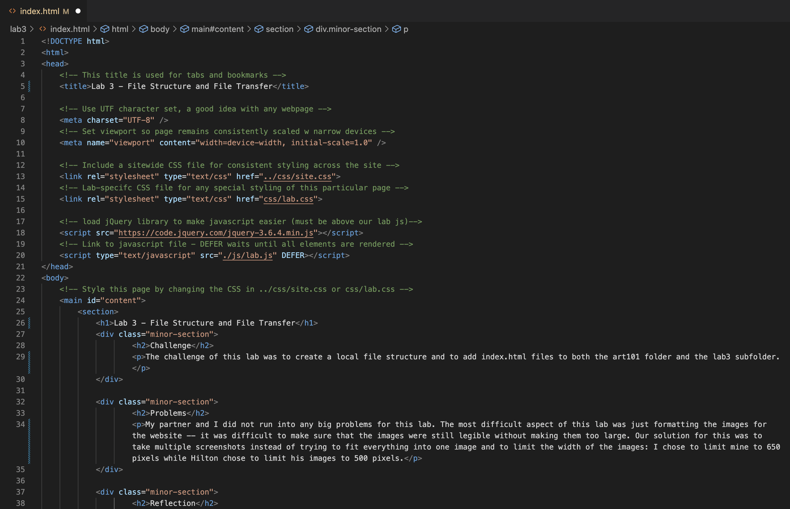 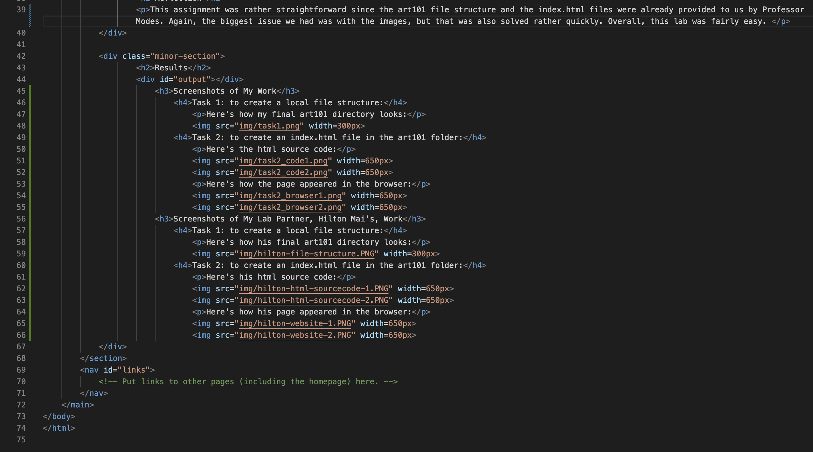Screenshots of My Lab Partner, Hilton Mai's, Work
Task 1: to create a local file structure:
Here's how their final art101 directory looks:
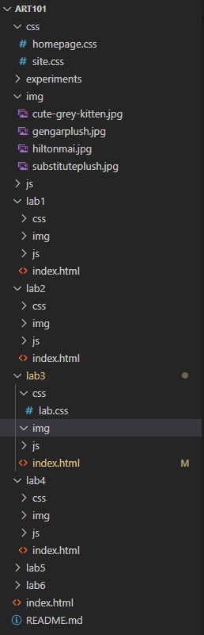Task 2: to create an index.html file in the art101 folder:
Here's their html source code:
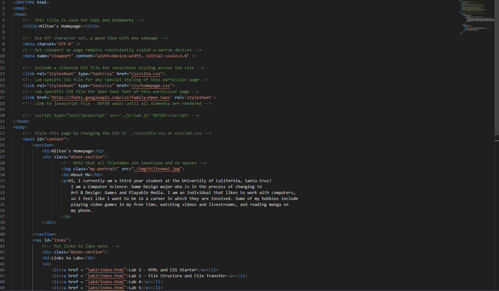 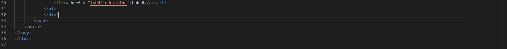Here's how their page appeared in the browser:
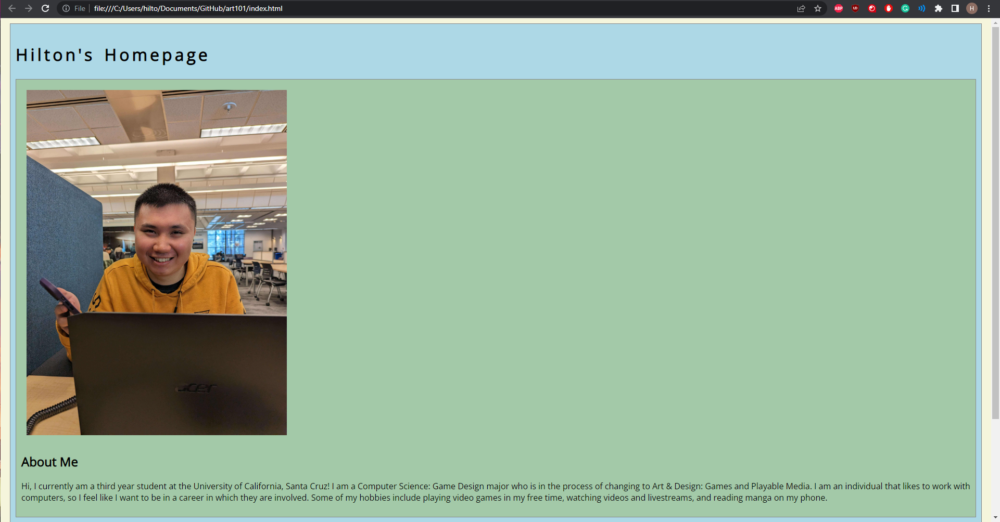 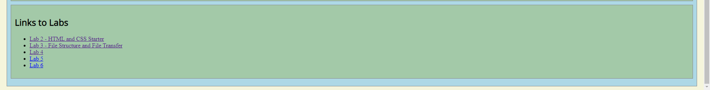Task 3: to create an index.html file in the lab3 folder:
Here's their html source code:
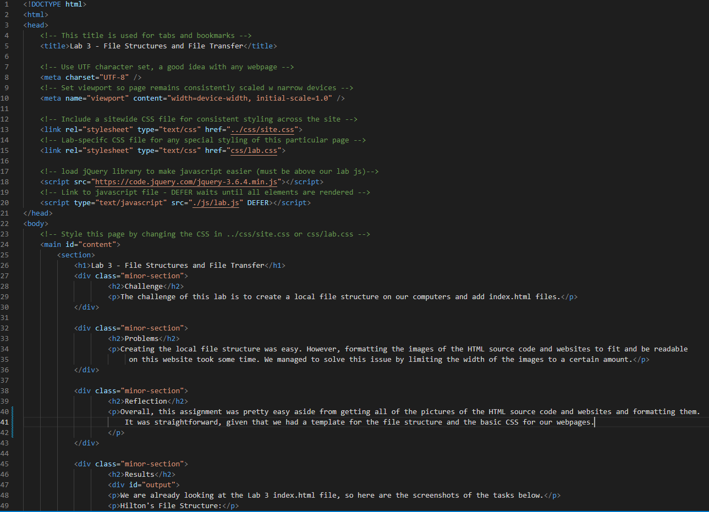 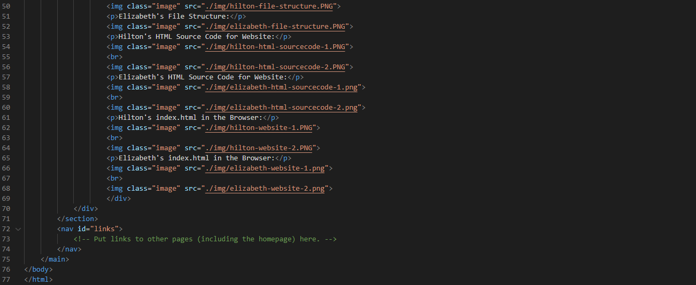